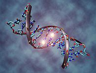
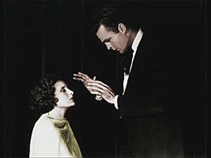
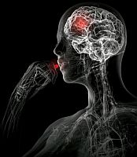

¿No debería haber evidencias de que existen los dioses?, ¿de que viven psíquicos a nuestro alrededor?, ¿de que los extraterrestres nos visitan y los medicamentos alternativos funcionan?, ¿por qué la gente asegura ver cosas donde no hay nada y cree mentiras de todos los tipos y grados?, ¿por qué la realidad es tan difícil de aceptar?

Las preguntas son inagotables, especialmente en ese límite donde el impasse se le otorga al que no cree, por “default”. Para muchas personas todo es un milagro, cada coincidencia un arreglo de su dios, cada triunfo una demostración de su existencia. Gente se conglomera y paga para ver a un psíquico hacerles una lectura en frío y escuchar a su familiar fallecido hablar como si fuera el médium, un perfecto extraño. Pero es sólo un acecho, toda prueba sobre lo sobrenatural o lo paranormal estaría basada en mitos que han sido desechados o construidos dentro de lo hoy desconocido. Sólo la fe te permite continuar así o la acomodación continua de las ideas.
Sabemos cada vez más sobre el cerebro gracias a la tecnología y a los geniales y curiosos estudios de las personas que se dedican a observarlo y analizarlo con el objetivo de conocer más sobre sus funciones. Sam Harris, por ejemplo, no sólo es un ateo fuera del clóset que ha escrito libros en contra de la fe y la religión sino que es parte de los Nuevos Ateos, un movimiento ateísta intenso que anda revelando a todas voces los innumerables malos pasos de las creencias. Harris, quien es también neurocientífico de la Universidad de California en Los Ángeles, en el 2007 publicó un estudio en el diario Annals of Neurology, llamado Imagen neuronal funcional de la creencia, la no creencia y la incertidumbre, donde indicaba que la distinción entre lo subjetivo y lo objetivo no estaba muy clara en el cerebro. En el experimento, Harris midió siete variables en los cerebros de 14 sujetos y observó cómo respondían a aserciones en las categorías de matemático, geográfico, semántico, fáctico, autobiográfico, ético y religioso.
El equipo de Harris descubrió que en el cerebro no importaba el contenido sino la creencia. Si el sujeto creía en el tema, el área de la corteza prefrontal ventral medial (VMPC), zona asociada con el procesamiento de recompensa, emoción y gusto, se activaba. Ahora bien, cuando la persona no creía lo que le decían, igual, sin importar la categoría, zonas primitivas asociadas con el gusto, la percepción del dolor y el asco se encendían como un arbolito de fin de año. De hecho, Harris escribe que las “proposiciones falsas pueden darnos asco”.
Sin embargo, las cosas más disparatadas son sostenidas. Los adultos del mundo parecen poseer un deseo infantil por suponer ciegamente, sin indicación alguna sobre sus declaraciones, que cualquier cosa es posible; en serio, cualquier cosa. Si damos una vuelta por el mundo encontraremos actividades asombrosas que involucran desde los más coloridos disfraces hasta la muerte de cualquier animal, incluyéndonos. Cada club asegura tener la verdad, no importa qué tan ridículas sean sus posiciones. Personas creen en monstruos marinos y terrestres, en horrendos extraterrestres que han venido a visitarnos creando una conspiranoia entre gobiernos y civiles, en profetas varios con poderes sobrenaturales que se manifiestan en estúpidas coincidencias, en máquinas costosas que dicen medir energías que toman formas distintas de acuerdo con la creencia, en la magia y en las brujas, en el chupacabras y en los unicornios, en los números prodigiosos, en las simples fechas de nacimiento y en el agua que cura, entre tantas cosas más. De hecho, hace mucho que la gente cree y los estilos de esta ingenuidad varían con el tiempo, la geografía y con la estructura cerebral de la persona. Aún así, las creencias son fuertes y se meten en la ideología individual con tanta entereza y firmeza que es muy arduo cambiarlas o evolucionar con ellas para luego abandonarlas para siempre, como hacemos con el ratoncito Pérez, los Reyes Magos y Santa Claus, como hemos hecho con las hadas, Zeus y Thor.
Veamos lo que va ocurriendo con nosotros. En este mundo moderno que habitamos, un sinnúmero de personas ha evolucionado por encima de sus creencias sin superarlas completamente. Ellos no las describen; para estas personas existe un ser sobrenatural en algún lado que tendrá una apariencia que irá con su naturaleza divina o “cuántica” y que sabremos o conoceremos al morir. Otros, sin embargo, toman este dios y sí pretenden describirlo, constriñéndolo dentro de lo desconocido, el único lugar donde le es posible estar. Para ellos, es donde la ciencia aún no arriba que se encuentran sus dioses y almas, su magia y su telepatía, sus energía y sus profetas.
La necesidad de creer está integrada en la especie, es obvio. Ha sido aprendida una y otra vez en el pasado y las familias están acostumbradas a darles continuación. Aún así, en el mundo moderno tenemos técnicas que hacen asequible la obtención de información lo que nos permite aprender rápidamente que las religiones dogmáticas tienen numerosos problemas. Para contrarrestarlos, la información se encuentra en cualquiera de las vueltas en el mundo virtual y vemos que muchos se dan cuenta de que lo mejor es descartar ideas dogmáticas y abrazar lo inexplorado. Es una postura que admite tiempo para engrandecer a los dioses en lo apartado, donde pueden vivir perfectamente haciendo, pues eso, cosas de dioses dentro de las tramas por descubrir de la neurología, la cuántica y la cosmología, particularmente.

Pero el tiempo mueve a los descriptores. La investigación científica lo ha venido haciendo desde siempre; por supuesto, cada etapa asegura que el próximo descubrimiento de lo que recientemente se desconoce otorgará realidad a ese sueño sobrenatural que aprendemos de niños: somos inmortales, ya sea debido al alma o por el Higgs, y el cosmos tiene mucho más planeado para nosotros.
No sé qué ocurrirá en el futuro pero estoy segura de que será lo mismo que hemos visto siempre; nos asombraremos con los descubrimientos científicos y adaptaremos nuestros conocimientos a ellos, los creyentes cambiarán perspectivas gracias a la tecnología y diseñarán nuevos dioses y almas, los deseos de la Nueva Era se moverán hacia otras incógnitas hasta que lo descubramos todo; o ad infinitum (más bien, ad nauseum).
John C. Avise, autor de “Los dioses genéticos: evolución y creencia en los asuntos humanos”, escribe en su libro que siente que habita dos mundos. El biólogo estadounidense de la evolución afirma que uno de ellos se encuentra en el laboratorio donde piezas de ADN, fragmentos de muestras, tesis y teorías conforman la vida, ofreciéndole firmeza y seguridad; esta visión se enfrenta con la que encuentra en los periódicos que lee en su casa, donde un pensamiento religioso exige su enseñanza en las aulas públicas y demanda que se enseñe el creacionismo como una respuesta equivalente a la evolución en las clases. Una idea que envía escalofríos a mis nervios.
Avise nos cuenta en el prólogo de su libro la trama de uno de sus episodios favoritos de Star Trek, cuando los chicos se encuentran con un objeto que se acerca a la Tierra desde el espacio profundo. Resulta que la nave era VGER, Voyager en realidad, el aparato robótico creado en la tierra tres siglos atrás que, a pesar de haber acumulado una cantidad portentosa de información científica por todo el universo, llegaba de vuelta buscando a su creador en el planeta. Avise se preguntaba entonces, ¿por qué creamos dioses a pesar de tener un abastecimiento constante de información?, ¿por qué esa idea de que hemos sido elaborados por un ser superior y esa obsesión por descubrir algo más?
Y la locura continúa a pesar de que este siglo nos ha acercado aún más a nuestros verdaderos creadores, asegura Avise: los genes. Y no hay nada sobrenatural o paranormal sobre ellos, “pero de algo estamos seguros al estudiarlos, ¡son asombrosos!”.
Sin embargo, a pesar de que podemos decir cómo hemos llegado a ser lo que somos, existen millones de personas en el mundo que prefieren una respuesta irracional. Una historia con un sinnúmero de seres y monstruos con superpoderes que están encargados de hacer y regalarnos reglas; desafortunadamente, ni nos crearon, ni las reglas funcionan y no existe evidencia alguna de que son y están. Entonces, ¿por qué ese empeño?, ¿por qué la mentira es más fácil de creer, aún cuando no tiene evidencias que la respalde?

El biólogo y genetista Richard Dawkins ha dicho públicamente que la religión se debe a la falta de educación y al adoctrinamiento de los niños, sin embargo, también nos enseña los caminos biológicos por donde corretean las creencias. Hemos manejado aquí las formas en que está conectado y programado el cerebro para creer, no en dioses, ni en hadas ni viejos panzudos, sencillamente para creer. Un bebé viene preparado para confiar en el adulto que lo cuida y en todo lo que dice, el hecho de que los adoctrinemos con el pensamiento de los distintos clubes y con nuestras propias versiones es sólo tirar fósforos encendidos en el charco de gasolina. Algunos dudarán y seguirán buscando, otros no. Para los primeros necesitamos una estructuración cerebral que esté preparada para la búsqueda, que no le tema a la inseguridad y a la incertidumbre y que prefiera hechos duros que suposiciones enmascaradas con recompensas ideales. Como todo, se trata de la simbiosis de siempre entre la experiencia y la biología, con los detalles y las variables que las hacen surgir.
Estudios varios, como los realizados en la Universidad de California en San Diego, han mostrado más de una vez la relación entre el lóbulo temporal, la epilepsia y la religión; para los investigadores, la especie viene programada hasta ¡para escuchar voces! Ciertamente, el neurólogo Vilayanur S. Ramachandran explicaba una vez que era posible que los genes que permiten la dúctil interconexión entre áreas cerebrales hayan permanecido con la especie porque ofrecen regalos positivos, como los grados de creatividad que vemos, y formas duraderas de persistir. Sin embargo, esta flexible interconexión puede llevar a horrendas condiciones neurológicas como la esquizofrenia… y a lo mejor también nos regala la creencia irracional.

Como he dicho antes, necesitamos más experimentos con cerebros ateos, es necesario descubrir por qué sólo una minoría decide a través de la evidencia y le da la espalda a las suposiciones infundamentadas. Es preciso observar qué ocurre en el cerebro del que no cree. Mientras tanto, es imposible para mí construir declaraciones y juicios basados en fenómenos, factores y escenarios extraordinarios sin las evidencias extraordinarias que los sustenten. Y se trata de una posición válida, palabras que una vez salieron del maravilloso astrónomo Carl Sagan, quien también caviló sobre esta realidad.
Realmente, como dice mi avispada y prudente amiga, “los creyentes deben insistir que sean sus dioses los que juzguen y castiguen la decisión de los demás, y no ellos, que dejen las reglas divinas a los seres y hagamos unas que sí funcionen; como los derechos”.
Y tiene tanta razón pero nadie le hará caso.
Un hábitat cinematográficamente infantil
El intenso poder de la sugestión
Nuestros genomas y cerebros son distintos. La persona a tu lado es probable que interprete las mismas palabras de forma desemejante a la tuya o la mía y esa interpretación podrá estar sujeta a otras variables disímiles, desde su sexo hasta el lugar donde fue criado. Los estilos son aprendidos, pero la especie nace con diferentes predisposiciones a la generalización de ellos.
Una de estas variables es la que acoge el poder de la sugestión. Por ejemplo, durante el siglo pasado se elaboró una escala de la susceptibilidad hacia ser hipnotizados por universidades como Stanford y Harvard. Lentamente, aquel fenómeno relacionado con el conocido reloj que se mueve de lado a lado y el hombre en la extraña indumentaria que lo sostiene y te hace cantar como un gallo, era investigado; aparentemente, hay cerebros que se dejan sugestionar fácilmente, otros no. Las variables que lo hacen así son distintas para cada uno de nosotros y han observado que este nivel de sugestión no tiene que ver con el conocimiento.
De esta forma, las diversas escalas individuales ayudan a los estudiosos de la cognición y la conducta motora a comprender mejor cómo funcionan o dejan de funcionar en el cerebro las órdenes de los demás, especialmente a esos a los que otorgamos autoridad. No debemos olvidar que cuando soñamos, muchas áreas, como la conexión motora con el cuerpo, deben desactivarse, o todos seríamos sonámbulos por el mundo y el estándar de muertes fuera realmente alto. Existen muchas conexiones cerebrales que no entendemos, lo que no quiere decir que la idea de la hipnosis ya descrita exista, pero muchos son hipnotizables. Aún así, hay inagotables debates sobre la hipnosis, investigadores han sido atacados con sus medidas ya que no toman en cuenta la sugestión sin hipnosis, un paso importante para conocer el grado de aceptación y seguimiento de cada individuo.
Tampoco está claro si la predisposición a la sugestión viene dada en el genoma, aunque se ha descubierto que la presencia y la ausencia de dos subtipos del gen COMT puede predecir la susceptibilidad hacia la hipnosis. Ciertamente, mantener personas que nazcan con la capacidad de seguir y otras con las de liderar, y que ambas puedan aprender a hacerlo si se lo proponen es realmente una buena decisión evolutiva. De hecho, se han reportado aumentos en el volumen del “rostrum”, una región en el cuerpo calloso, en los cerebros de aquellas personas que son altamente hipnotizables. Sin embargo, existe un debate amplio sobre si el grado de sugestión puede ser modificado y hasta qué punto.
El efecto placebo es otro refuerzo anclado en la creencia al tratamiento y a la confianza que se le otorga a la autoridad que lo indica; otra vez, esa certidumbre ciega a lo que dice la “autoridad”. De hecho, conocemos sobre el placebo porque un porcentaje de las personas incrementa su salud y hasta se mejora completamente con el efecto y, efectivamente, el placebo se utiliza hoy en las grandes investigaciones farmacéuticas para diferenciar un efecto verdadero de uno imaginario inducido por la sugestión. Durante décadas se ha estudiado este efecto, se conoce que no es puramente psicológico y que está influenciado por varios factores, tanto genéticos, poligenéticos y en otras versiones físicas. La noción nos asegura que se trata de una realidad mecánica que debemos de tener en cuenta cuando desesperados decidimos comprar agua para curar nuestro mal.
Es magnífico pensar que existen seres con poderes sobrenaturales y paranormales, es estupendo alojar ideas sin bases realistas para sustentar el concepto de que somos especiales. Es cinematográficamente infantil. Las ideas de un Universo sin significado, de una vida animal donde poseemos toda la responsabilidad de lo que ocurre y de lo que nos ocurre y la concepción de un paso mortal donde el final es precisamente eso, el final, pues no son muy acogedoras. Por ejemplo, pensar que los niños viven mejor creyendo fantasías aunque se las quites después, puede ser otra mala creencia y en eso podemos estar equivocados también. Sin embargo, imaginar un mundo realista para los niños está muy lejos de la forma de pensar acogida en muchas sociedades; el tiempo ya nos lo dirá.
Evidentemente, la adultez debería de caracterizarse por la necesidad de un contenido sobrio, pero no es así. El ser humano se acomoda, se alegra con los más inesperados objetos, siguiendo pautas biológicas, creando ritos ambientales, dejando sus cosas a los dioses y afianzando mitos adorando comerciales. Ese es el peligro de la sugestión, no comprender de lo que se trata da pie a que se establezca una pseudociencia que se nutre de su falsa ocurrencia.
Paradigmáticamente, muchas enfermedades pueden ser mejoradas por el efecto placebo, no va a curar el cáncer ni a reparar el hígado colapsado pero es posible que ofrezca bienestar a un porcentaje de personas. Ese reflejo, sin embargo, será endosado al tratamiento y no al placebo. No importa la cantidad de estudios que aseguren que el rezo no funciona o que la homeopatía es un fraude, mientras el efecto placebo sea transferido y la mayoría no lo entienda ni lo desee comprender, observaremos a millones de personas caer en estos hábitos y pagar por ello. Otros hasta a sus hijos dejarán morir con tal de creer sin evidencias, con tal de aceptar lo extraordinario como real en base a una rasa anécdota personal.
Volver al índice de la Lupa Herética
© 2008-2021 Glenys Álvarez y Sin Dioses. Prohibida la reproducción con fines comerciales.
Comentarios
Comments powered by Disqus